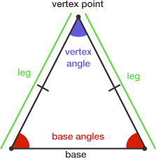
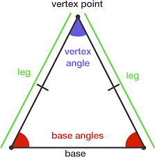

Properties of these triangles
- Equilateral - All sides are equal.
- Isosceles - Exactly 2 sides are equal.
- Scalene - No sides are equal.
- Not a triangle: The sum of the lenghts of any two sides of a triangle is less than or equal to the lenghts of the third side.
 
